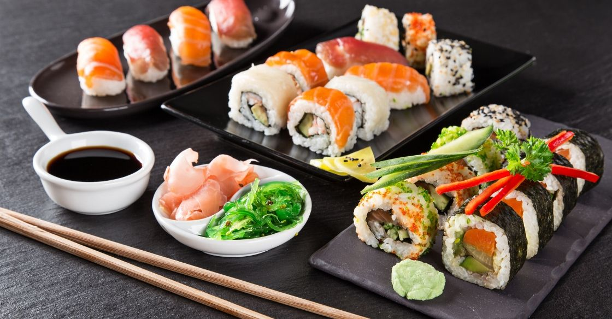

Sushi

Description
Sushi is a Japanese dish of prepared vinegared rice, usually with some sugar and salt, accompanying a variety of ingredients, such as seafood, vegetables, and occasionally tropical fruits.
Ingredients
- Rice
- Vinegar
- Sugar
- Salt
- Nori
- Fillings (seafood, vegetables, etc.)
Steps
- Cook the sushi rice according to package instructions
- Mix rice vinegar, sugar, and salt in a small bowl until dissolved
- Once rice is cooked, transfer to a large wooden bowl and pour vinegar mixture over it
- Gently fold and fan the rice to cool it while incorporating the vinegar mixture
- Lay out a sheet of nori on your bamboo rolling mat
- Spread a thin layer of seasoned rice on the nori, leaving a 1-inch strip empty at the top
- Add your fillings in a line across the center and roll tightly using the bamboo mat